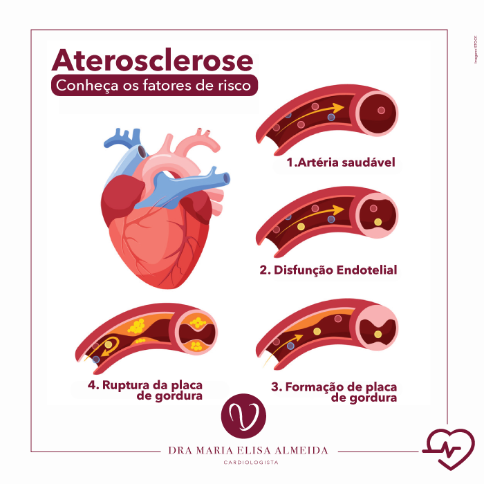

Sobre nós
Nós somos os salvadores dos orgãos que você não cuida direito e fica cara a cara com a morte por irresponsabilidade, seu inútil

Nossa Jornada: Do Sonho à Realidade
Há décadas, um grupo de visionários nutria o sonho de construir um refúgio de cuidados e esperança. Hoje, orgulhosamente, oferecemos excelência médica com calor humano, colocando o paciente em primeiro lugar.
- Certificamos que você prevalecerá vivo
- Em caso de enganos, garantimos que sua família pagará os custos
- A empresa é fantasma, logo garantimos anonimidade total de suas cirurgias
Junte-se a nós nessa missão contínua de promover o bem-estar e fazer a diferença na vida de cada indivíduo que confia em nossa dedicação e cuidado.F
Doutores responsáveis pela sua vida
Departamentos para o acesso a troca de orgão (legalmente)
Laboratorio de pesquisa onde estudamos formas de conseguir orgãos legalmente
Medalhas pelas olímpiadas nacionais e legalizadas de tráfico de orgãos
Tópicos
Os principais tópicos abordados para que você consiga entender perfeitamente o sistema cardiovascular, suas divisões, importância, doenças e como se cuidar.
Sistema Circulatório em Animais
Os principais tópicos abordados para que você consiga entender perfeitamente o sistema cardiovascular em diferentes classes de animais.
Peixes
Os peixes têm um sistema circulatório simples, com um coração de duas câmaras (Átrio e Ventrículo). São pecilotérmicos, ou seja, o ambiente que regula a temperatura deles.
Anfíbios
Os anfíbios têm um sistema circulatório mais complexo, com um coração de três câmaras. São pecilotérmicos.
Répteis
Os répteis têm um sistema circulatório ainda mais complexo, com um coração de quatro câmaras no caso dos crocodilianos, no restante também são de 3 câmaras. São pecilotérmicos
Aves e Mamíferos
Sistema circulatório completo, fechado, a temperatura é regulada pelo próprio corpo, ou seja, não são pecilotérmicos.
Sistema Circulatório do Ser Humano
Entenda um pouco sobre o sistema circulatório no corpo humano.
Como o sangue circula pelo corpo humano?
Incialmente, é necessário entender que existem, em tese, 2 tipos de concentrações principais no sangue:
- Sangue arterial (Maior concentração de oxigênio);
- Sangue venoso (Maior concentração de dióxido de carbono).
O sangue é recebido no átrio direito, logo após ele é mandado para o ventrículo direito pela valva tricúspide; Quando o ventrículo se enche o suficiente com sangue, ele bombeia pela valva pulmonar em direção aos pulmões, onde ocorrerá o processo de Hematose, isto é, o sangue rico em gás carbônico é liberado para os alvéolos pulmonares, em contrapartida eles recebem o oxigênio.
Após o processo de hematose, o sangue entra de volta no coração pela veia pulmonar, o sangue vai em direção ao ventrículo esquerdo, mas para isso deve passar pelo átrio esquerdo e a valva mitral; Há o acúmulo de sangue no ventrículo que ao se encher suficientemente, bombeia o sangue para todo o corpo.
- O sangue passe pelos tecidos e deixa o oxigênio
- As veias cavas levam o sangue de volta ao coração para o átrio direito e com o sangue rico em gás carbônico, reiniciando o processo.
Vale ressaltar que as veias cavas receber e trazem o sangue para o coração de duas partes: parte superior e inferior do corpo
Faça seu agendamento
Sabia que a Medicio possui uma clínica física? Caso você queira marcar uma consulta com nossos especialistas, preencha o formulário a seguir.
Doenças
Entenda nessa área as principais relacionadas ao sistema cardiovascular
Hipertensão Arterial
Condição em que a força do sangue contra a parede das artérias é muito grande.
Normalmente, a hipertensão é definida como a pressão arterial acima de 14/9 e é considerada grave quando a pressão está acima de 18/12. Em geral, a pressão arterial elevada não tem sintomas. Ao longo do tempo, se não for tratada, poderá causar problemas de saúde, como doenças cardíacas e acidente vascular cerebral. Adotar uma dieta saudável com menos sal, praticar exercícios físicos regularmente e tomar medicamentos pode ajudar a baixar a pressão arterial.
Aterosclerose
Acúmulo de gorduras, colesterol e outras substâncias nas paredes das artérias e dentro delas.
Um acúmulo de placas de colesterol nas paredes das artérias, o que causa obstrução do fluxo sanguíneo. As placas podem se romper e provocar oclusão aguda da artéria por meio de coágulos. Em geral, a aterosclerose não apresenta sintomas até a ruptura das placas ou quando o acúmulo é grave o suficiente para obstruir o fluxo sanguíneo. Uma dieta saudável e exercícios físicos podem ajudar. Os tratamentos incluem medicamentos, procedimentos para desobstruir artérias e cirurgia.
Doença Arterial Coronariana
Dano ou doença nos principais vasos sanguíneos do coração.
A causa mais comum é o acúmulo de placas. Isso faz com que as artérias coronárias se estreitam, limitando o fluxo sanguíneo para o coração. A doença arterial coronariana pode não apresentar sintomas, como também pode causar dores no peito e ataque cardíaco. Os tratamentos incluem mudanças no estilo de vida, medicamentos, angioplastia e cirurgia.
Infarto Agudo do Miocárdio
Bloqueio do fluxo sanguíneo para o músculo cardíaco.
Um ataque cardíaco é uma emergência médica. Geralmente, ocorre quando um coágulo bloqueia o fluxo sanguíneo para o coração. Sem sangue, o tecido perde oxigênio e morre. Os sintomas incluem sensação de aperto ou dor no peito, no pescoço, nas costas ou nos braços, bem como fadiga, tontura, batimento cardíaco anormal e ansiedade. As mulheres são mais propensas a apresentar sintomas atípicos do que os homens. O tratamento varia de mudanças no estilo de vida e reabilitação cardíaca a medicamentos, endopróteses e cirurgia de bypass.
Acidente Vascular Cerebral (AVC)
Danos ao cérebro devido à interrupção do fornecimento de sangue. Um acidente vascular cerebral é uma emergência médica.
Os sintomas de acidente vascular cerebral incluem dificuldade para andar, falar e compreender, bem como paralisia ou dormência da face, do braço ou da perna. O tratamento precoce com medicamentos como tPA (anticoagulante) pode minimizar danos cerebrais. Outros tratamentos concentram-se em limitar complicações e prevenir mais acidentes vasculares cerebrais.
Insuficiência Cardíaca
Doença crônica em que o coração não bombeia o sangue como deveria.
A insuficiência cardíaca pode ocorrer quando o coração não consegue bombear sangue (sistólica) ou encher-se de sangue (diastólica) adequadamente. Os sintomas incluem falta de ar, fadiga, pernas inchadas e batimentos cardíacos acelerados. O tratamento pode incluir a ingestão limitada de sal e de líquidos, bem como o uso de medicamentos com prescrição. Em alguns casos, pode ser implantado um desfibrilador ou marca-passo.
Calma, calma
A leitura estava boa, correto? Antes de continuarmos, gostaria de apresentá-los algumas pessoas que utilizaram os serviços Medicio e deixaram alguns comentários.
Local incrível! Depois que comecei a usar bomba, meu coração queria parar, mas os médicos conseguiram reanimar e me tornar saudável novamente, ainda mantive minha testosterona em 11.000. Obrigado Medicio!

Iuri Souza
Professor e Crossfiteiro
Quis quorum aliqua sint quem legam fore sunt eram irure aliqua veniam tempor noster veniam enim culpa labore duis sunt culpa nulla illum cillum fugiat legam esse veniam culpa fore nisi cillum quid.

John Larson
Entrepreneur
Perguntas Mais Frequentes
Nessa aba estão as perguntas mais frequentes sobre o sistema circulatório.
-
O sangue arterial só circula em artérias? E o sangue venoso?
Não, o sangue arterial circula predominantemente em artérias, mas existe a artéria pulmonar que leva sangue venoso, como também a veia pulmonar que traz sangue arterial.
-
O sistema circulatório das aves é igual ao dos mamíferos?
O sistema das aves é praticamente idêntico, mas a posição da artéria aórtica diferencia os dois sistemas.
-
O que é sangue?
O sangue é um fluido composto por plasma, hemácias, leucócitos e plaquetas. O plasma é a parte líquida do sangue. As hemácias são células vermelhas do sangue que transportam oxigênio. Os leucócitos são células brancas do sangue que defendem o corpo contra infecções. As plaquetas são fragmentos de células que ajudam a coagular o sangue.
-
O que são vasos sanguíneos?
Os vasos sanguíneos são tubos que transportam o sangue pelo corpo. Eles são divididos em três tipos: artérias, veias e capilares. As artérias transportam o sangue do coração para o corpo. As veias transportam o sangue do corpo para o coração. Os capilares são vasos sanguíneos muito finos que se ramificam por todo o corpo. Eles permitem a troca de gases e nutrientes entre o sangue e as células.
Doutores
Componentes responsáveis pelas consultas e construção do site Medicio

Kaique José
O Cabeça
Cândido Nicolau
O olho